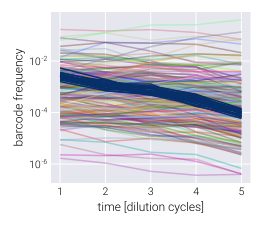
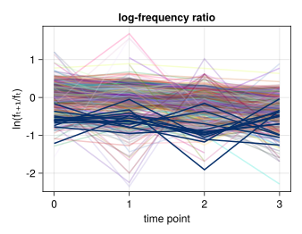
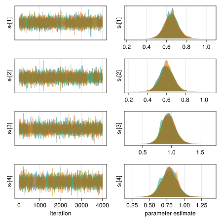
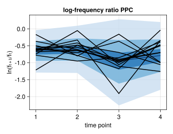
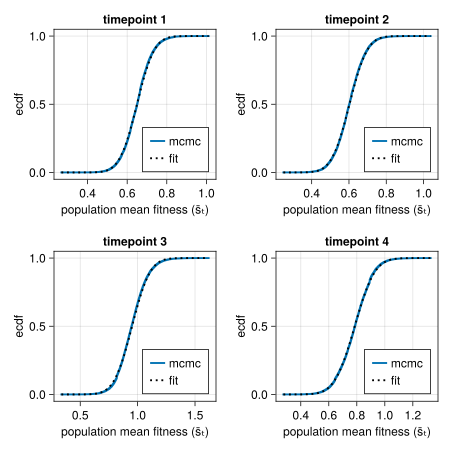
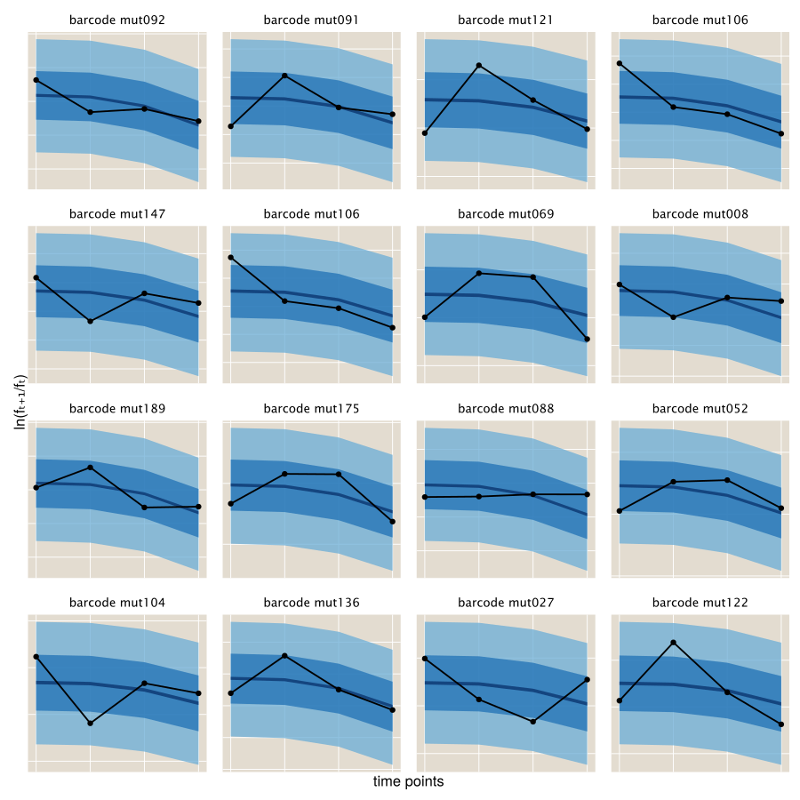

BayesFitness
Welcome to the documentation of BayesFitness.jl! The accompanying paper, Bayesian inference of relative fitness on high-throughput pooled competition assays, explains all of the biological and mathematical background needed to understand this package. Here, we only focus on how to use the package, assuming the user already understands the objective of inferring the posterior probability distribution of the relative fitness of mutant strains in a pooled competition assay.
The package is divided into modules. Here's a brief description of the content of each module, but please visit their respective documentations to understand what each module is intended for.
utils: Series of miscellaneous functions that make the data wrangling and processing much simpler.stats: Statistical functions used in the inference problem.model:Turing.jl-based Bayesian models used to infer the population mean fitness via the neutral lineages as well as the mutants' relative fitness.mcmc: The main module with which to perform the Markov-Chain Monte Carlo sampling of the posterior distributions.
Example inference
To get you going with the package, let's walk through a basic inference pipeline for one competition assay. Our ultimate goal consists of inferring the relative fitness for each of the barcoded genotypes of interest. To that end, we assume that the frequency time-series obeys the following equation
\[f_{t+1}^{(b)} = f_{t}^{(b)} \mathrm{e}^{\left(s^{(b)} - \bar{s}_t \right)\tau}, \tag{1}\]
where $f_{t}^{(b)}$ is the frequency of barcode $b$ at time $t$, $s^{(b)}$ is the relative fitness of this barcode, $\bar{s}_t$ is the population mean fitness at time $t$, and $\tau$ is the time interval between time $t$ and $t+1$.
The first step consists of importing the necessary packages.
We use import rather than the more common using command. We find it better to keep the project organized, but feel free to use whatever is more convenient for you!
# Import Bayesian inference package
import BayesFitness
# Import libraries to manipulate data
import DataFrames as DF
import CSVAfter having imported the libraries, we need to load our dataset into memory. This dataset is already in the format needed for BayesFitness.jl to work, so we don't have to modify anything.
# Import data
data = CSV.read("~/git/BayesFitness/test/data/data_example_01.csv", DF.DataFrame)Here you will replace "~/git/BayesFitness/test/data" with the directory where your data is stored, and "data_example_01.csv" with the name of the file containing the data. The resulting DataFrame looks something like this:
| BCID_x | barcode | name | count | time | neutral | count_sum |
|--------|-------------------------------------------------------|-------------------------|-------|------|---------|------------|
| 0 | TGATCAATCTACAAAAATATTTAATG_GAGTGAAACATGAATGGTATTCATCA | Batch1_1Day-T0_combined | 53 | 0 | FALSE | 543947 |
| 1 | CCGCCAATCCCGAACCCCGTTTCGCC_ACTCTAACGTGTAACTAATTTTGAGT | Batch1_1Day-T0_combined | 1213 | 0 | FALSE | 543947 |
| 2 | GACAGAAAAGCCAAATGGATTTACCG_ATGGGAACACGGAATGATCTTTTATT | Batch1_1Day-T0_combined | 17 | 0 | FALSE | 543947 |
| 3 | CCAACAAAACACAAATCTGTTGTGTA_TACTAAATAAGTAAGGGAATTCTGTT | Batch1_1Day-T0_combined | 19 | 0 | FALSE | 543947 |
| 4 | TATCGAAACCCAAAGAGATTTAATCG_ATGACAAACTTTAAATAATTTAATTG | Batch1_1Day-T0_combined | 23 | 0 | FALSE | 543947 |
| 5 | TATCGAAACCCAAAGAGATTTAATCG_CGATCAAAGACTAACTTATTTTGTGG | Batch1_1Day-T0_combined | 16 | 0 | FALSE | 543947 |
| 6 | TATCGAAACCCAAAGAGATTTAATCG_TTGCCAAGCTGGAAAGCTTTTTATGA | Batch1_1Day-T0_combined | 12 | 0 | FALSE | 543947 |
| 7 | ATCACAATAACTAAACTGATTCTTCA_CTCATAACATCAAAAAAAATTCAAAT | Batch1_1Day-T0_combined | 161 | 0 | FALSE | 543947 |
| 8 | TATCGAAACCCAAAGAGATTTAATCG_GTTTAAACCATTAATTATATTAGATC | Batch1_1Day-T0_combined | 19 | 0 | FALSE | 543947 |The relevant columns in this data frame are:
barcode: The unique ID that identifies the barcode.count: The number of reads for this particular barcode.time: The time point ID indicating the order in which samples were taken.neutral: Indicator of whether the barcode belongs to a neutral lineage or not.
Let's take a look at the data. For this we import the extra package that includes some plotting routines.
To make the package more modular, we did not include plotting functionalities since this can interfere with the installation of the package on remote servers. Instead, the accompanying paper repository includes a module that we can import to create basic plots using Makie.jl. There are other options within the Julia ecosystem that users might be more familiar with.
The BayesFitUtil.viz module has several Makie.jl-based functions to easily display the data. Let's import the necessary plotting libraries
# Import package with useful plotting functions for our dataset
import BayesFitUtils
# Import plotting libraries
using CairoMakie
import ColorSchemesFirst, let's plot the barcode frequency trajectories. For this, we use the convenient [BayesFitUtils.viz.bc_time_series!] function.
# Initialize figure
fig = Figure(resolution=(400, 300))
# Add axis
ax = Axis(
fig[1, 1], xlabel="time", ylabel="barcode frequency", yscale=log10
)
# Plot mutant barcode trajectories
BayesFitUtils.viz.bc_time_series!(
ax,
data[.!(data.neutral), :],
zero_lim=0,
alpha=0.3
)
# Plot neutral barcode trajectories
BayesFitUtils.viz.bc_time_series!(
ax,
data[data.neutral, :],
zero_lim=0,
color=ColorSchemes.Blues_9[end],
)We highlight the neutral barcodes⸺defined to have relative fitness $s^{(n)}=0$⸺with dark blue lines. The rest of the light-color lines correspond to individual barcodes.

We can rewrite Eq. (1) as
\[\frac{1}{\tau} \ln \frac{f_{t+1}^{(b)}}{f_{t}^{(b)}} = \left(s^{(b)} - \bar{s}_t \right). \tag{2}\]
In this form, we can se that the relevant quantity we need to infer the values of the population mean fitness $\bar{s}_t$ and the barcode relative fitness $s^{(b)}$ are not the frequencies themselves, but the log ratio of these frequencies between two adjacent time points. Let's plot this log frequency ratio using the [BayesFitUtils.viz.logfreq_ratio_time_series!] function.
# Initialize figure
fig = Figure(resolution=(400, 300))
# Add axis
ax = Axis(fig[1, 1], xlabel="time", ylabel="ln(fₜ₊₁/fₜ)")
# Plot mutant barcode trajectories
BayesFitUtils.viz.logfreq_ratio_time_series!(
ax,
data[.!(data.neutral), :],
alpha=0.3
)
# Plot neutral barcode trajectories
BayesFitUtils.viz.logfreq_ratio_time_series!(
ax,
data[data.neutral, :],
color=ColorSchemes.Blues_9[end],
)We expect is to see these log-frequency ratios as relatively flat lines. Especially for the neutral lineages.

Brief description of the Bayesian model
We invite the user to read the full details of our statistical model in the accompanying paper. Briefly, we track $B$ unique barcodes over $T$ time points. Therefore, We can think of the data as consisting of a $T \times B$ matrix $\underline{\underline{D}}$ with integer entries $D_t^{(i)}$ representing the number of reads for barcode $i$ at time $t$. For these number of reads per barcode, we imagine we draw a Poisson-distributed number of organisms such that
\[D_t^{(i)} \sim \text{Poiss}\left(\lambda_t^{(i)}\right), \tag{3}\]
where
\[\lambda_t^{(i)} \propto n_t^{(i)} \tag{4}\]
i.e., the Poisson sample for organism $i$ depends on the current number of organisms of type $i$ in the population. The barcode dynamics described in Eq. 1 and 2 depend on the relative frequency rather than the absolute number of organisms in the population. In the context of this model, the frequency is then defined as
\[f_t^{(i)} = \frac{n_t^{(i)}}{\sum_j n_t^{(j)}} = \frac{\lambda_t^{(i)}}{\sum_j \lambda_t^{(j)}} \tag{5}\]
Our Bayesian inference then is done over the list of parameters $\{s^{(m)}\}$, $\{\bar{s}_t\}$, and $\{\lambda_t^{(i)}\}$. Furthermore, we include nuisance parameters $\{\sigma^{(m)}\}$ and $\{\bar{\sigma}_t\}$ that go into our likelihood function (see details in accompanying paper). For this inference, we then define the following priors:
\[s^{(m)} \sim \mathcal{N}\left(\mu_{s}, \sigma_{s}\right), \tag{6}\]
\[\sigma^{(m)} \sim \mathcal{N}\left(\mu_{\sigma}, \sigma_{\sigma}\right), \tag{7}\]
\[\bar{s}_t \sim \mathcal{N}\left(\mu_{\bar{s}}, \sigma_{\bar{s}}\right), \tag{8}\]
\[\bar{\sigma}_t \sim \mathcal{N}\left(\mu_{\bar{\sigma}}, \sigma_{\bar{\sigma}}\right), \tag{9}\]
and
\[\lambda_t^{(i)} \sim \log\mathcal{N}\left(\mu_\lambda, \sigma_\lambda\right). \tag{10}\]
For the likelihood function, we divide it between our direct observations⸺the number of reads per barcode⸺and the latent variables⸺the frequency ratio between adjacent time points. For the observations, we have that each entry of our data matrix $\underline{\underline{D}}$ is Poisson distributed, as defined in Eq. 3. It can be shown that the joint probability of the $B$ independent Poisson random variables at time $t$ is equivalent to writing
\[N_t \sim \text{Poisson}\left(\sum_j \lambda_t^{(j)}\right), \tag{11}\]
and
\[\underline{D}_t \sim \text{Multinomial}\left(N_t, \underline{f}_t\right), \tag{12}\]
where $\underline{D}_t$ is the list of counts for time point $t$, $N_t = \sum_j D_t^{(j)}$ is the total number of reads at time $t$, and $\underline{f}_t$ is the list of barcode frequencies for time point $t$.
For the latent (unobserved) frequency ratios, we define one likelihood function for the neutral lineages only of the form
\[\frac{f_{t+1}^{(n)}}{f_t^{(n)}} \sim \log\mathcal{N}\left(-\bar{s}_t, \bar{\sigma}_t\right). \tag{13}\]
For the mutant lineages, we have
\[\frac{f_{t+1}^{(m)}}{f_t^{(m)}} \sim \log\mathcal{N}\left(s^{(m)} -\bar{s}_t, \sigma^{(m)}\right). \tag{14}\]
Using the neutral lineages to determine our priors
One of the feature of Bayesian analysis is that we can include prior information into our inference task that encodes our domain expertise. For analysis with a lot of data, as long as the prior is broad-enough, this becomes less relevant. However, although we have a lot of data for multiple barcodes, we are actually in the low-data regime since for each barcode we typically have on the order of 4-5 time point measurements. Thus, defining appropriate priors is important for our inference pipeline. Unfortunately, we do not necessarily measure each genotype multiple times within the same experiment to get a sense of the expected variation in our measurements. An exception to this are the neutral barcodes. These barcodes represent multiple measurement of allegedly the same reference genotype. Therefore, we can use the variability within these measurements to define the priors for our inference.
Specifically, we will use the data from the neutral lineages to define the parameters $(\mu_{\bar{s}}, \sigma_{\bar{s}})$, $(\mu_{\bar{\sigma}}, \sigma_{\bar{\sigma}})$, and $(\mu_{\sigma}, \sigma_{\sigma})$. We will use the default values for the rest of the parameters $(\mu_{s}, \sigma_{s})$, and $(\mu_{\lambda}, \sigma_{\lambda})$.
Let's now take the neutrals data and obtain these parameters
# Group neutral data by barcode
data_group = DF.groupby(data[data.neutral, :], :barcode)
# Initialize list to save log frequency changes
logfreq = []
# Loop through each neutral barcode
for d in data_group
# Sort data by time
DF.sort!(d, :time)
# Compute log frequency ratio and append to list
push!(logfreq, diff(log.(d[:, :freq])))
end # for
# Generate matrix with log-freq ratios
logfreq_mat = hcat(logfreq...)
# Compute mean per time point for approximate mean fitness
logfreq_mean = StatsBase.mean(logfreq_mat, dims=2)
# Define prior for population mean fitness
s_pop_prior = hcat(-logfreq_mean, repeat([0.3], length(logfreq_mean)))
# Generate single list of log-frequency ratios to compute prior on σ
logfreq_vec = vcat(logfreq...)
# Define priors for nuisance parameters for log-likelihood functions
σ_pop_prior = [StatsBase.mean(logfreq_vec), StatsBase.std(logfreq_vec)]
σ_mut_prior = σ_pop_priorRunning the inference
With these priors in hand, we can run the inference. For this, we use the BayesFitness.mcmc.mcmc_joint_fitness function from the mcmc module. The main parameters we need to define are:
:data: Tidy data frame containing the raw barcode counts.:n_steps: Number of posterior samples per walker to keep.:n_walkers: Number of MCMC chains to run in parallel. NOTE: Having multiple chains run in parallel is convenient for diagnostics. NOTE:Turing.jlgives us the functionality to run multiple chains simultaneously in a multi-threaded way. We specify this with the:ensembleoption:outputname: String defining the pattern for the output file. This can be something related to the dataset. For example, the growth media, or the date of the experiment, of whatever metadata used to distinguish different datasets.:model: Bayesian model from themodelmodule that defines the posterior distribution to be sampled.:model_kwargs: The parameters required by themodelfunction.:sampler:Turing.jlMCMC sampler to use for the inference.:ensemble: Modality to be used when running the inference. This allows us to run multiple chains either in series (Turing.MCMCSerial()), in multithread (Turing.MCMCThreads()), or with multiple process (Turing.MCMCDistributed()).:rm_T0: Whether or not to remove the first time point in the data when performing the inference.
To speed-up the computation, we will use the DynamicHMC.jl No-U-Turn sampler with ReverseDiff.jl as the auto differentiation backend (see Turing.jl documentation for more information on this). Let's import the necessary packages and set the differentiation backend options.
# Import library to perform Bayesian inference
import Turing
import DynamicHMC
# Import AutoDiff backend
using ReverseDiff
# Import Memoization
using Memoization
# Set AutoDiff backend
Turing.setadbackend(:reversediff)
# Allow system to generate cache to speed up computation
Turing.setrdcache(true)For this dataset, we use the BayesFitness.model.fitness_lognormal model from the model module. Now, we can compile all of the necessary parameters into a dictionary.
# Define sampling hyperparameters
n_steps = 1000
n_walkers = 4
# Define function parameters
param = Dict(
:data => data,
:n_walkers => n_walkers,
:n_steps => n_steps,
:outputname => "./output/chain_joint_fitness_$(n_steps)steps_$(lpad(n_walkers, 2, "0"))walkers",
:model => BayesFitness.model.fitness_lognormal,
:model_kwargs => Dict(
:s_pop_prior => s_pop_prior,
:σ_pop_prior => σ_pop_prior,
:σ_mut_prior => σ_mut_prior,
),
:sampler => Turing.DynamicNUTS(),
:ensemble => Turing.MCMCThreads(),
:rm_T0 => false,
)Next, we run the inference.
BayesFitness.mcmc.mcmc_joint_fitness(; param...)The output of this function is a .jld2 file that saves the native data structure with the MCMC samples and the list of the mutant barcodes in the order used in the inference so that we can map the variable names to the corresponding barcodes.
Validating the inference
The first step to check the inference results is to load the MCMC chain into memory. For this, we need to load the JLD2.jl package as well as the MCMCChains.jl package that allows us to manipulate the data structure containing the MCMC chains.
# Import package to search file name
import Glob
# Import package to load .jld2 files into memory
import JLD2
# Import package to manipulate MCMCChains.Chain objects
import MCMCChains
# Define file
file = first(Glob.glob("./output/chain_joint_fitness_*"))
# Load list of mutants and MCMC chain
ids, chn = values(JLD2.load(file))To diagnose the inference, it is useful to plot both the MCMC traces for each walker as well as the resulting density plots. Let's first do this for the population mean fitness-related values $\underline{\bar{s}}_t$ and $\underline{\bar{\sigma}}_t$. To do this, we feed the chain data structure to the BayesFitnUtils.viz.mcmc_trace_density! function to automatically generate these plots.
# Extract variable names
var_names = vcat(
[MCMCChains.namesingroup(chn, :s̲ₜ), MCMCChains.namesingroup(chn, :σ̲ₜ)]...
)
# Initialize figure
fig = Figure(resolution=(600, 800))
# Generate mcmc_trace_density! plot
BayesFitUtils.viz.mcmc_trace_density!(fig, chn[var_names]; alpha=0.5)What we want to see from these plots is that all traces look relatively similar, with no big gaps where the walker got stuck. Furthermore, we want to see that all the densities converged to very similar-looking distributions. That is indeed the case for our dataset.

Another way of assessing the output of this inference step is to plot the posterior predictive checks against the data. The logic behind the posterior predictive checks is the following: before performing the inference on the parameters we seek to learn form the data, we have a prior belief of what those values can be encoded in our prior distribution. We update this prior belief after observing the experimental data given our likelihood function that captures our model for the data generating process. Thus, the posterior distribution of the parameter values contains our updated belief for what the parameter values can be. Therefore, we can sample out of this parameter posterior distribution and feed such parameters to our likelihood function to generate synthetic data. The expectation is that this simulated data should capture the range of experimental data we observed if the model and the inferred parameters describe the data generation process.
For this particular case of the population mean fitness, we can use the BayesFitness.stats.logfreq_ratio_mean_ppc from the stats module to compute the posterior predictive checks. What this function does is to generate samples for the log-frequency ratios used to infer the population mean fitness values.
Note that the BayesFitness.stats.logfreq_ratio_mean_ppc function has methods to work with either MCMCChains.Chains objects or with tidy DataFrames.DataFrame. This allows you to use the data structure you are more comfortable working with.
# Define dictionary with corresponding parameters for variables needed for
# the posterior predictive checks
param = Dict(
:population_mean_fitness => :s̲ₜ,
:population_std_fitness => :σ̲ₜ,
)
# Define number of posterior predictive check samples
n_ppc = 500
# Define colors
colors = get(ColorSchemes.Blues_9, LinRange(0.25, 1.0, length(qs)))
# Compute posterior predictive checks
ppc_mat = BayesFitness.stats.logfreq_ratio_mean_ppc(
chn, n_ppc; param=param
)Once we generate these samples, we can plot the quantiles of the simulated data with different shades. The BayesFitUtils.viz.ppc_time_series! function makes this plotting really simple. Let us plot the standard 68-95 as well as the 5 percentile with different shades of blue and then add the data on top of these shaded areas
What we expect from this plot is to see that most of the experimental data falls within the range of the simulated data, meaning that the model and the inferred parameters can reproduce the range of our observations.
# Define quantiles to compute
qs = [0.05, 0.68, 0.95]
# Define colors
colors = get(ColorSchemes.Blues_9, LinRange(0.25, 1.0, length(qs)))
# Define time
t = vec(collect(axes(ppc_mat, 2)) .+ 1)
# Initialize figure
fig = Figure(resolution=(450, 350))
# Add axis
ax = Axis(
fig[1, 1],
xlabel="time point",
ylabel="ln(fₜ₊₁/fₜ)",
title="neutral lineages PPC"
)
# Plot posterior predictive checks
BayesFitUtils.viz.ppc_time_series!(
ax, qs, ppc_mat; colors=colors, time=t
)
# Plot log-frequency ratio of neutrals
BayesFitUtils.viz.logfreq_ratio_time_series!(
ax,
data[data.neutral, :];
freq_col=:freq,
color=:black,
alpha=1.0,
linewidth=2
)
This plot shows that the range of inferred population mean fitnesses does capture the log-frequency ratios of the neutral lineages.
Let us repeat this analysis for the mutants. Obviously, with the incredibly large number of unique mutant barcodes, it would be difficult to visualize all trace-density plots as well as all posterior predictive checks. But we can take a random subset of them to make sure they look okay in general.
# Find columns with mutant fitness values and error
s_names = MCMCChains.namesingroup(chn, :s̲⁽ᵐ⁾)
# Define barcodes to include
var_names = StatsBase.sample(s_names, 8)
# Initialize figure
fig = Figure(resolution=(600, 800))
# Generate mcmc_trace_density! plot
BayesFitUtils.viz.mcmc_trace_density!(fig, chn[var_names]; alpha=0.5)
All these example density and trace plots look good. Next, let us compute and plot some example posterior predictive checks for a few mutants.
# Define number of posterior predictive check samples
n_ppc = 500
# Define quantiles to compute
qs = [0.95, 0.675, 0.05]
# Define number of rows and columns
n_row, n_col = [4, 4]
# Initialize figure
fig = Figure(resolution=(300 * n_col, 300 * n_row))
# List example barcodes to plot
bc_plot = StatsBase.sample(eachrow(df_summary), n_row * n_col)
# Initialize plot counter
counter = 1
# Loop through rows
for row in 1:n_row
# Loop through columns
for col in 1:n_col
# Add axis
ax = Axis(fig[row, col])
# Extract data
data_bc = DF.sort(
data[data.barcode.==bc_plot[counter].barcode, :], :time
)
# Define colors
colors = get(ColorSchemes.Blues_9, LinRange(0.5, 1.0, length(qs)))
# Define dictionary with corresponding parameters for variables needed
# for the posterior predictive checks
param = Dict(
:mutant_mean_fitness => Symbol(bc_plot[counter].variable),
:mutant_std_fitness => Symbol(
replace(bc_plot[counter].variable, "s" => "σ")
),
:population_mean_fitness => :s̲ₜ,
)
# Compute posterior predictive checks
ppc_mat = BayesFitness.stats.logfreq_ratio_mutant_ppc(
chn, n_ppc; param=param
)
# Plot posterior predictive checks
BayesFitUtils.viz.ppc_time_series!(
ax, qs, ppc_mat; colors=colors
)
# Add scatter of data
scatterlines!(ax, diff(log.(data_bc.freq)), color=:black, linewidth=2.5)
# Add title
ax.title = "barcode $(first(data_bc.barcode))"
ax.titlesize = 18
## == Plot format == ##
# Hide axis decorations
hidedecorations!.(ax, grid=false)
# Update counter
global counter += 1
end # for
end # for
# Add x-axis label
Label(fig[end, :, Bottom()], "time points", fontsize=22)
# Add y-axis label
Label(fig[:, 1, Left()], "ln(fₜ₊₁/fₜ)", rotation=π / 2, fontsize=22)
We can see that indeed the recovered fitness value greatly agrees with the data.
This concludes the example inference pipeline. We invited you to explore more the potential in the package and please send any comments/requests through the GitHub repository issues.